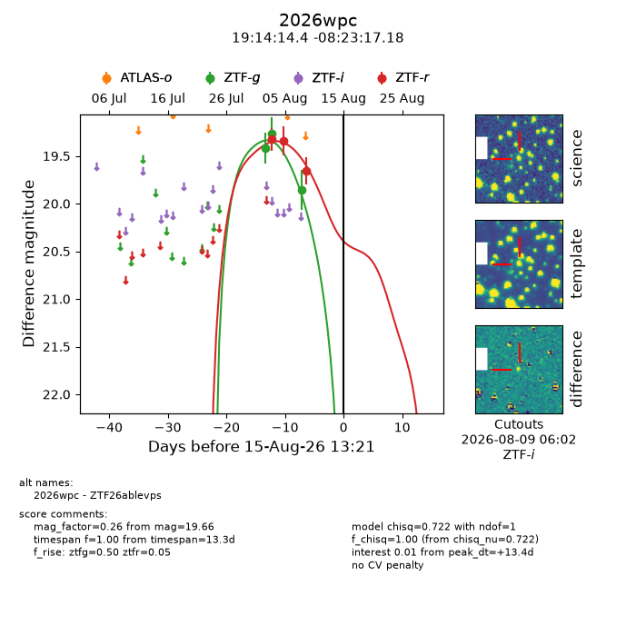
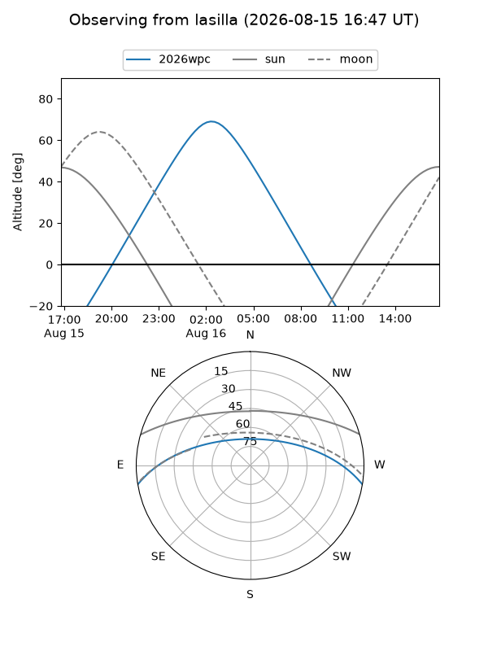
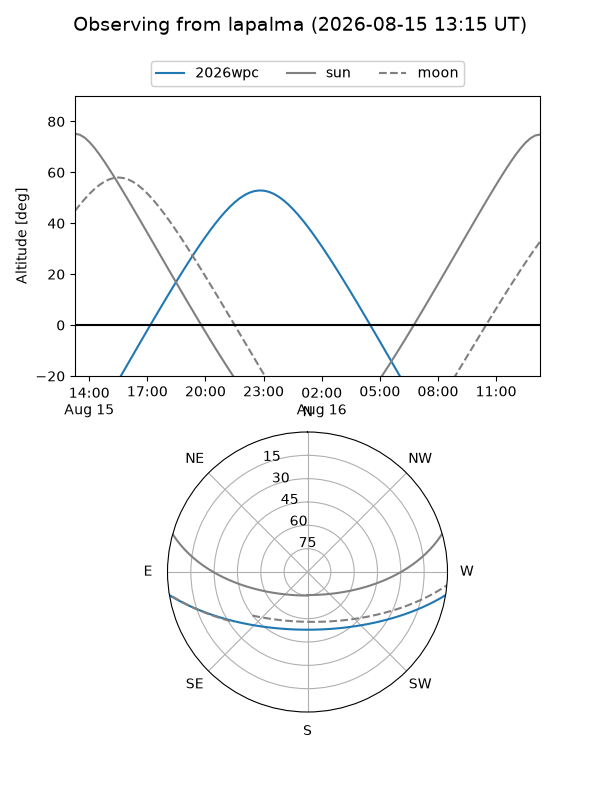
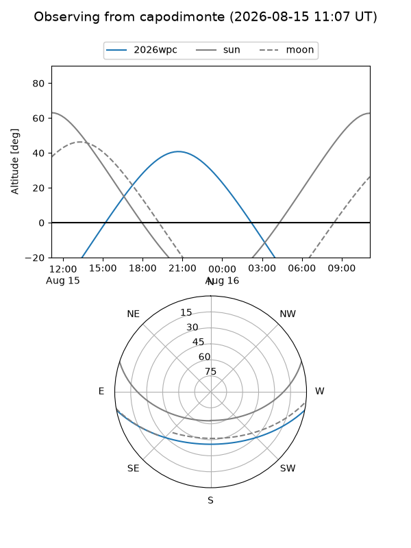
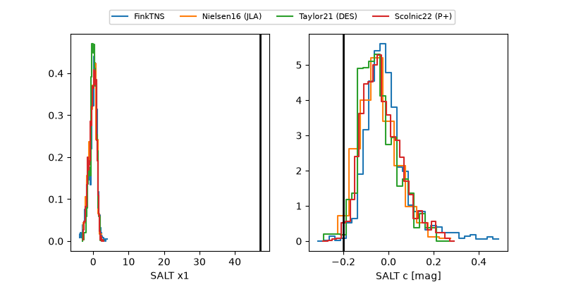

2026wpc
Target 2026wpc at 2026-08-15 13:24
Aliases and brokers:
FINK-ZTF: ztf.fink-portal.org/ZTF26ablevps
Lasair-ZTF: lasair-ztf.lsst.ac.uk/objects/ZTF26ablevps
ALeRCE-ZTF: alerce.online/object/ZTF26ablevps
YSE-PZ: ziggy.ucolick.org/yse/transient_detail/2026wpc
TNS name: wis-tns.org/object/2026wpc
Direct TNS query: direct search
alt names
ZTF26ablevps (ztf,fink_ztf)
2026wpc (tns,yse)
Coordinates:
equatorial (ra, dec) = 288.5598,-8.38811
equatorial (HMS+DMS) = 19:14:14.36,-08:23:17.18
galactic (l, b) = (27.9956,-8.85713)
Flags:
TNS type: nan
peak dt: +13.4
Photometry:
last ztfg=19.86, ztfr=19.66
3 ztfg, 3 ztfr detections
Lightcurve

Visibility



Additional plots
